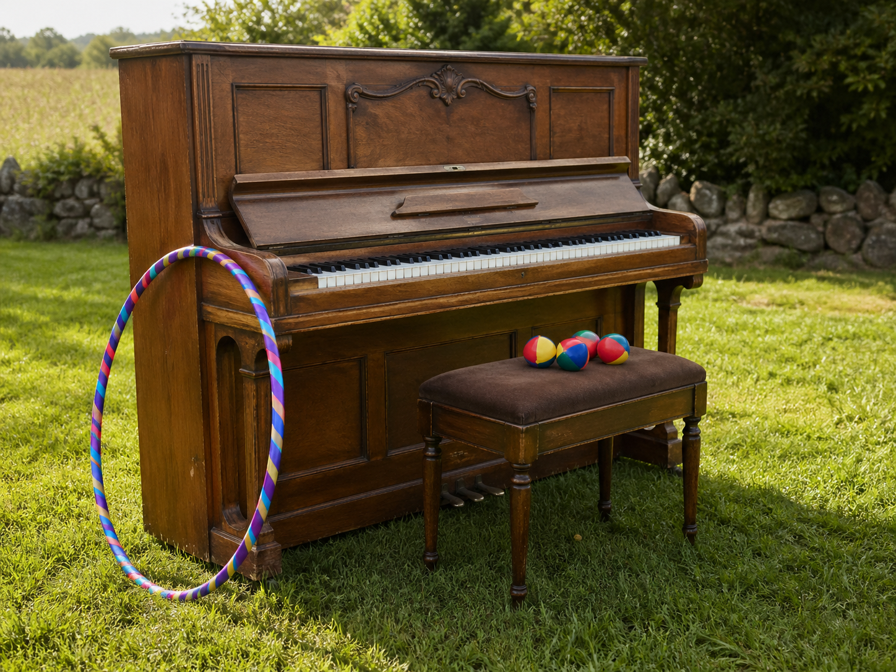

Steve Barry Stuns Terrigal With Record-Breaking Triple-Task Triumph
Terrigal Witnesses History
On 18 April 2026, at 11am, Terrigal witnessed history. It arrived with a hula hoop, a set of juggling balls, and a piano. Local legend Steve Barry has officially smashed the local Central Coast community record for the longest continuous hula-hooping while juggling and playing the piano, in a spectacle that brought Duffy’s Road to a standstill and left the crowd roaring.
The new record now stands at 25 minutes, 37 seconds, beating the previous record of 12 minutes 14 seconds, which according to local records, was set by Steve himself on Christmas Day, 2021
A Triple-Task Triumph
More than 600 people gathered to watch the extraordinary attempt, with spectators lining the street, spilling onto nature strips, and craning for a glimpse of what many are already calling “the greatest display of rhythm, balance and questionable life choices the Coast has ever seen.” As Steve launched into a lively piano medley, the hoop spun flawlessly, the juggling balls flew in perfect arcs, and the crowd erupted with every passing minute.
Duffy’s Road Comes Alive
Witnesses described the atmosphere as electric. Children waved handmade signs, adults cheered themselves hoarse, and at least one local is believed to have declared, “I came for a quick look and stayed for history.” Food vans reportedly sold out, neighbours leaned over fences, and traffic moved at a respectful crawl as the performance continued with astonishing focus and flair.
Steve Barry Seals the Record
When the final note rang out and the record was confirmed, Duffy’s Road burst into celebration. Steve, still somehow smiling, accepted the applause with the quiet dignity of a man who had just combined three activities most people would struggle to do separately. By all accounts, it was a brilliant day for Terrigal, a proud moment for the Central Coast, and a reminder that greatness sometimes arrives wearing a hula hoop.